Utility models used by the component models
Extends from Modelica.Icons.Package (Icon for standard packages).
| Name | Description |
|---|---|
| Additional icons used in package FMITest | |
| 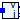 PinToI | Adaptor for a pin with voltage as input and current as output |
| 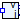 PinToV | Adaptor for a pin with current as input and voltage as output |
| 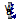 RotFlangeToPhi | Adaptor for a Rotational flange with angle, speed, and acceleration as outputs |
| 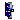 RotFlangeToTau | |
| 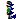 TransFlangeToS | Adaptor for a Translational flange with position, speed, and acceleration as outputs |
| 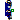 TransFlangeToF | |
| InquireInitializationEnd | Modelica code to inquire when fmiCompletedInitialization has to be called in a Modelica model |
Adaptor for a pin with voltage as input and current as output
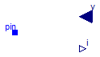
Extends from FMITest.Utilities.Icons.PartialElectricalAdaptorIcon (Basic graphical layout of an adaptor block from a physical to input/output connectors).
| Type | Name | Description |
|---|---|---|
| Pin | pin | |
| input RealInput | v | Potential at the pin as provided from the outside [V] |
| output RealOutput | i | Current flowing in to the pin as provided to the outside [A] |
Adaptor for a pin with current as input and voltage as output
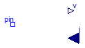
Extends from FMITest.Utilities.Icons.PartialElectricalAdaptorIcon (Basic graphical layout of an adaptor block from a physical to input/output connectors).
| Type | Name | Description |
|---|---|---|
| NegativePin | pin | |
| input RealInput | i | Current flowing in to the pin as provided from the outside [A] |
| output RealOutput | v | Potential at the pin as provided to the outside [V] |
Adaptor for a Rotational flange with angle, speed, and acceleration as outputs
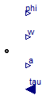
Extends from FMITest.Utilities.Icons.PartialMechanicalAdaptorIcon.
| Type | Name | Default | Description |
|---|---|---|---|
| Boolean | enable_a | true | Enable the output connector a |
| Type | Name | Description |
|---|---|---|
| Flange_a | flange | |
| output RealOutput | phi | Flange moves with angle phi due to torque tau [rad] |
| output RealOutput | w | Flange moves with speed w due to torque tau [rad/s] |
| output RealOutput | a | Flange moves with angular acceleration a due to torque tau [rad/s2] |
| input RealInput | tau | Torque to drive the flange [N.m] |
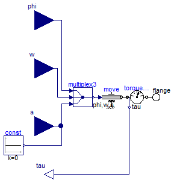
Extends from Icons.PartialMechanicalAdaptorIcon.
| Type | Name | Default | Description |
|---|---|---|---|
| Boolean | enable_a | true | Enable the output connector a |
| Type | Name | Description |
|---|---|---|
| Flange_b | flange | |
| input RealInput | phi | Angle to drive the flange [rad] |
| input RealInput | w | Speed to drive the flange [rad/s] |
| input RealInput | a | Angular acceleration to drive the flange [rad/s2] |
| output RealOutput | tau | Torque needed to drive the flange according to phi, w, a [N.m] |
Adaptor for a Translational flange with position, speed, and acceleration as outputs
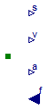
Extends from FMITest.Utilities.Icons.PartialMechanicalAdaptorIcon.
| Type | Name | Default | Description |
|---|---|---|---|
| Boolean | enable_a | true | Enable the output connector a |
| Type | Name | Description |
|---|---|---|
| Flange_a | flange | |
| output RealOutput | s | Flange moves with position s due to force f [m] |
| output RealOutput | v | Flange moves with speed v due to force f [m/s] |
| output RealOutput | a | Flange moves with acceleration a due to force f [m/s2] |
| input RealInput | f | Force to drive the flange [N] |
Extends from Icons.PartialMechanicalAdaptorIcon.
| Type | Name | Default | Description |
|---|---|---|---|
| Boolean | enable_a | true | Enable the output connector a |
| Type | Name | Description |
|---|---|---|
| Flange_b | flange | |
| input RealInput | s | Position to drive the flange [m] |
| input RealInput | v | Speed to drive the flange [m/s] |
| input RealInput | a | Acceleration to drive the flange [m/s2] |
| output RealOutput | f | Force needed to drive the flange according to s, v, a [N] |
Modelica code to inquire when fmiCompletedInitialization has to be called in a Modelica model